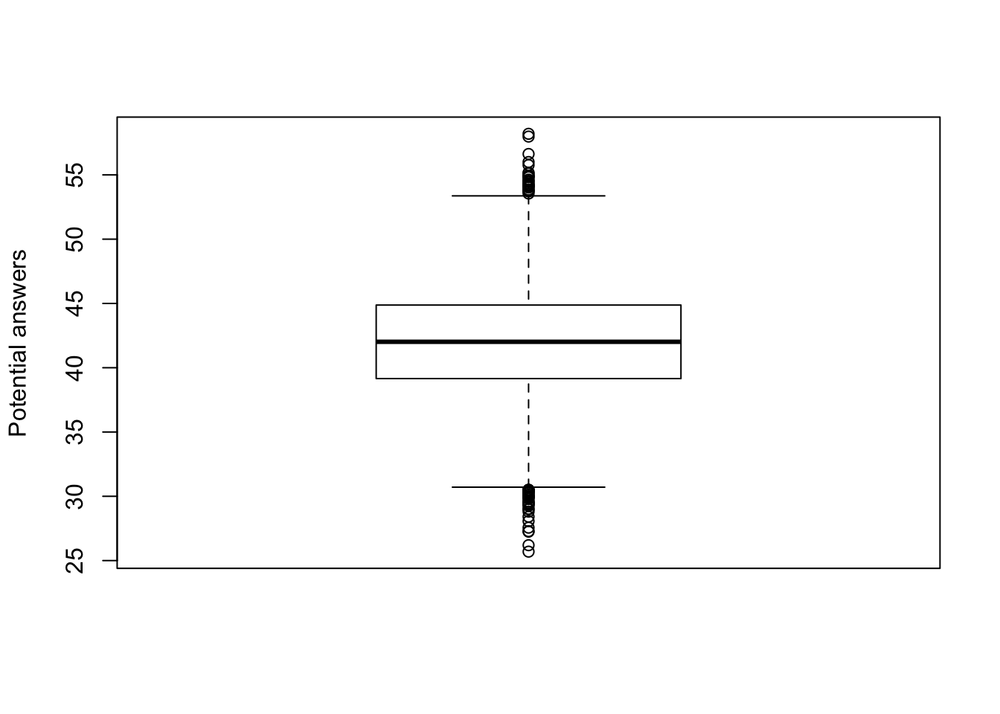
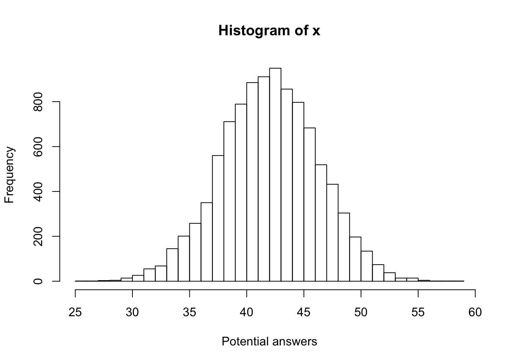

3 R recap
In LIFE223, we taught you how to use R for statistical analysis and visualising data. This chapter will contain a basic overview of some of the things from 223 that you may find useful as we proceed. You only need to bother with this if you are new to R or have blocked it from your memory since you last used it.
3.1 Basics
R works well as a calculator.
[1] 42However, R is capable of a great deal more than just simple mathematical operations like multiply and divide. It also has functions that can calculate some common descriptive stats like mean and standard deviation.
[1] 42.04517[1] 4.2217043.1.1 Plotting
R is also a very flexible graphical tool. From LIFE223, you probably remember a few basic plotting functions. Each function in R has arguments that can be added to label axes or change point size as you can see in these plots.


For much of this book, I will actually be doing most plotting in a package called ggplot2. This package has a slightly different syntax to get used to but the increased flexibility you have will be a good payoff. Plus the plots look quite nice.

3.1.2 The working directory
The working directory is the folder on your computer where R’s attention is focused. This is where you should store any files you need R to open. You can find out the path of the current working directory using the function getwd()
[1] "/Users/chrismitchell/Google Drive/University of Liverpool/GitHub Stuff/bookdownCRG"If this isn’t the folder we want as our working directory, we can just as easily change it with setwd()
If you are using RStudio there is also a shortcut to do this in the Files pane (usually bottom right). Use this pane to navigate to your chosen directory and then use the drop down menu under More (look for a blue cog) to set the current folder as your working directory.
If you aren’t using RStudio, I’d strongly suggest you start. It’s much more user friendly than base R.
3.1.3 Loading data
Data comes in many forms and R is capable of reading most of them if you know the correct functions. One of the most common formats is comma separated values. This has the file extension .csv at the end of the filename. If you open a .csv file with MS Excel or Numbers, you will see that it usually looks much like a spreadsheet. To load a .csv data file into R, use the function read.csv() as shown here.
For other data formats, you may require a different function. For example, data may be provided as a text file (extension .txt). In this case, you need read.table(). Note that with this function you need to specify that your data has a header (a top row with names for columns) whereas read.csv() assumes this by default.
3.1.4 Subsetting
Let’s say I want to subset my data based on a certain condition. I can achieve this multiple ways but one of the simplest is the function subset.
This function takes a subset of the object data and applies the rule that the value of each row in the column species be Homo sapiens. Thus it extracts the lines of data that are from human beings.
3.2 Errors
Error messages are a part of life with R. You are not expected to be able to interpret every single one immediately and you definitely shouldn’t panic or give up when you get one.
Here’s a basic error message:
Warning in file(file, "rt"): cannot open file 'mydaat.csv': No such file or
directoryError in file(file, "rt"): cannot open the connectionThe message tells me that R “cannot open the connection” and no such file exists. This means that R cannot find the file I was looking for in the current working directory. It could be because I haven’t set the correct working directory or the file is there but in a different format. In this case, the error has appeared because I have spelled the name incorrectly. I have sent R looking for a file called mydaat.csv instead of mydata.csv. Always remember that R is a useful idiot and will only do exactly what you tell it to do!
3.3 Google
The most important skill you need for using R is the ability to use Google (other search engines are available). It may seem odd but almost any problem you will ever encounter with R can be solved by a quick Google search.
If you come up against a confusing error message, copy and paste the message into Google. You will quickly land on one of the forums where someone else has asked about the same error message. The odds are pretty good you’ll discover an explanation for the problem there.
If you don’t know how to do something, pop the name of what you want to do into Google and add “in R” at the end and there will almost always be a tutorial on the first page of results with exactly what you need.
Seriously, Google is your strongest ally here. The community of R users has populated the internet with endless advice and guidance for every level from beginner to the most advanced of users. That brings me to my next point…
3.4 Stealing
If imitation is the greatest form of flattery then learning to code in R is just about the most flattering thing you can do. The internet is teeming with examples of R code for all kinds of purposes including in this very book. Take it without thinking twice.
You will have acheived a pretty good level of skill in R when you can take someone else’s code and edit it for your own purposes. This is the core skill of R and once you can do that, you’ll be unstoppable.